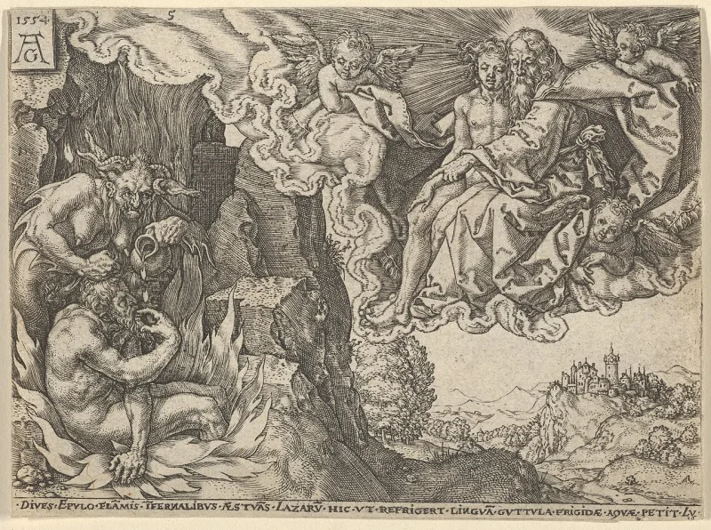

Witness defenders have a real answer here. Say so before your friend does.
The soul is simply the living person. There is no part that survives death.
Their flagship verse is Ecclesiastes 9:5, and their book What Does the Bible Really Teach? (2005) says the dead are conscious of nothing at all.
Hell is the common grave of mankind. The wicked are destroyed, not punished forever.
In Luke 16:19-31 the rich man sees, speaks, remembers his brothers and is in torment, after death and before the resurrection. Revelation 6:9-11 shows the souls of killed martyrs crying out, being answered and being given robes.
Paul says being away from the body is being at home with the Lord (2 Corinthians 5:8). He calls departing to be with Christ far better than staying (Philippians 1:23).
That is a strange preference if it means unconsciousness.
Ecclesiastes 9:5, Ecclesiastes 9:10 and Psalm 146:4 say the dead know nothing. Jesus called death sleep (John 11:11-14), and so did Paul (1 Thessalonians 4:13).
Luke 16 is a parable aimed at the Pharisees, and no other parable is mined for a map of the afterlife. The words nephesh and psyche often just mean life or person.
And conditional immortality has serious non-Witness defenders, including Edward Fudge and John Stott.
Their reading of Luke 23:43 shows the system at work. Jesus tells the thief he will be with him in paradise.
Their Bible moves the comma so that Jesus is only speaking today.
Genuinely arguable, both ways. These debates run inside orthodox Christianity too, and Stott leaned toward annihilation.
Use this case to show how a system drives readings, not as a knockout.
"Paul says leaving the body is being at home with the Lord. How does that work if nobody is home?"

The dead know nothing, Luke 16 is a parable, and John Stott agreed on hell.
The strongest Witness defense runs like this. Ecclesiastes 9:5, Ecclesiastes 9:10 and Psalm 146:4 say the dead know nothing. Death is called sleep, by Jesus (John 11:11-14) and by Paul (1 Thessalonians 4:13).
Luke 16 is a parable aimed at the Pharisees. It is not a map of the afterlife, and no other parable is pressed for a literal picture of the world. The words nephesh and psyche often just mean life, or person.
And conditional immortality is defended by respected scholars who are not Witnesses. Edward Fudge and John Stott are the best known, and a minority stream of evangelicals stands behind them. So this belief cannot be dismissed as a cult marker.
A fair fight. These debates run inside the wider church too, so tread lightly.
Graded conservatively. Both debates here are live inside orthodox Christianity. What happens between death and resurrection is argued. So is the nature of final punishment, and Stott famously leaned toward annihilation.
Reading Luke 16 as a parable is defensible. And the sleep language is real.
Use this case to show how a system drives readings of a text. The moved comma at Luke 23:43 is the clearest example. Do not use it as a stand-alone refutation.